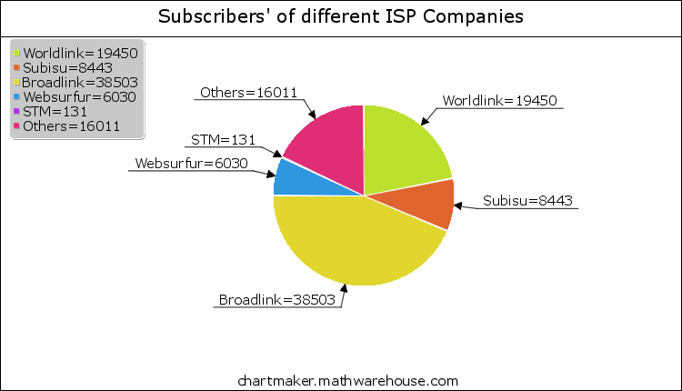
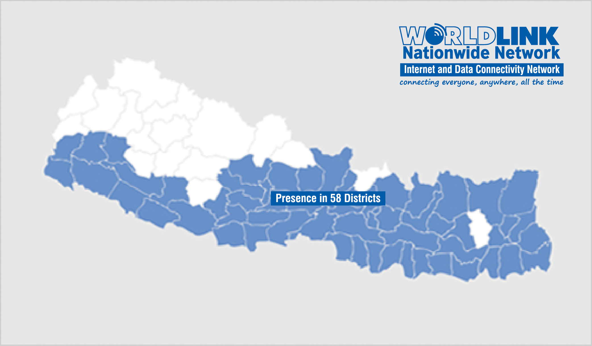

WorldLink is one of the largest Internet Service Provider (ISP) in Nepal and one of the most prominent IT companies.
Founded in September 1995 with the aim of providing Internet and IT services
Started off by providing store-and-forward e-mail services over a dial-up link to the Internet in the US.
In March 1997, WorldLink started providing full Internet access over a dedicated leased-line to the Internet backbone in the US through Teleglobe International.
From September 1999 till June 2008, WorldLink has been connecting to the Internet over a direct satellite uplink through its own VSAT terminal, thereby completely bypassing Nepal Telecommunications Corporation, the local PTT
1%(88,568 ) of the total market share of the data/internet subscriber is of the ISPs.
19,450 (21.96% of ISPs )subsciber are using the service provided by worldlink.
Source: MIS report of NTA, Shrawan, 2070 (October, 2013)

Internet Telephony
Internet access refers to the means by which users connect to the Internet. Methods of access include Dial-up, Cable, Broadband and Wireless.
Internet Telephony
Customers can make low-cost international calls to anywhere outside Nepal.
Also provides solutions for voice communications within offices in Nepal and abroad using Internet Telephony technology.
dataSAFE Online Backup
dataSAFE is WorldLink’s online data backup service. After users download and install the dataSAFE application, whenever the user is connected to the Internet, the application automatically backs up files and folders selected by the user to the dataSAFE server located at WorldLink’s data center.
Data Networking
Web Services
Software Development
ICT Consultancy
The area where it covers are shown
The number of employees is around 400
Out of them around 100 are females
The employees are categorized as per grading system.
The employee gets promotion as according to his/her performance and experience.
The salary is as per government rule. Initital salary starts from Rs 8,000 and differs as per the grading system of the company
Average age of the employee is around 25 years
If employees fail in his duty, he is alerted what mistakes he has done.
If required, further training is provided to him. Have not kicked out any employees yet.
Around 15% of the employees are changed annually.
The area where the employees go after leaving the company are as:
50% go to the foreign land for studies cum jo
25% go to other companies due to attractive offers
Rest 25% starts there own business
After a year of service, employee can take a leave of 30 days besides regular holidays.
If he does not take complete leave he will be provided with more facilities.
If employee have to work beyond regular time, then extra perks is provided.
Discounts on connection of internet
Trainings
Promotions etc.